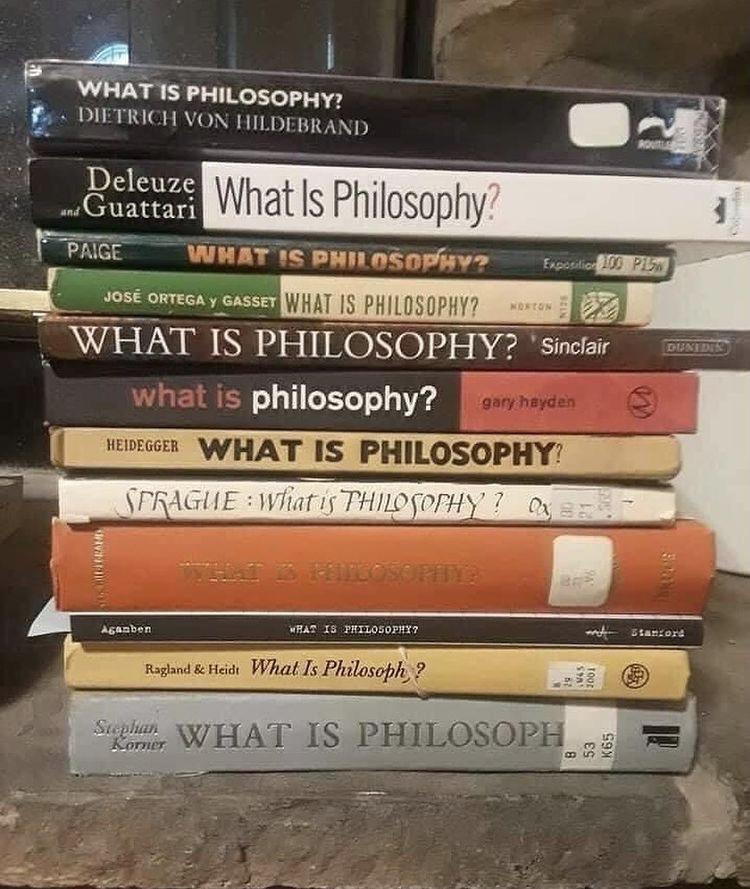

If you didn’t notice, this is a philosophy society.
Surely there must be something about it. As of February, 2026, this society has 79 members, and has been around for 8 years. We have a newsletter, a Whatsapp group, an Instagram page, and weekly public events, several of which are open to all. And the one question that gets asked, is…
“What is philosophy?”
Never in the “thoughtful” or “academic” manner, no, but in the “What the hell are you guys even doing?” one. I can’t blame them, it’s a damn fair question. Why would one waste their formative years in pursuing this unwonted and primeval field in the humanities and not even get something to put on their resume? And I have a confession: I don’t know the exact answer to it.
But in my defense, it doesn’t look like anyone else does either.

The Wikipedia page on philosophy tells us the following.
Philosophy (from Ancient Greek philosophía, lit. ‘love of wisdom’) is a systematic study of general and fundamental questions concerning topics like existence, knowledge, mind, reason, language, and value. It is a rational and critical inquiry that reflects on its methods and assumptions.
Good enough, I guess. But could you possibly get any vaguer?
Do physicsists not care about the nature of existence and the Universe? Do pychologists not care about the nature of the mind and consciousness? Do mathematicians and linguistics not care about reason and language, respectively? Do all of them hate wisdom? Can’t you do a “systematic study” of all of the above through some eclectic combination of the fields aforementioned?
Trying to define philosophy is philosophy itself.
Welcome to the Metaverse
If you would allow me an opinion: a more applicable, dare I say more intuitive, definition of philosophy, is that it is the practice of Meta-ness.
We prepend the “meta-” prefix to all sorts of things — meta-ethics, meta-cognition, in literature and media we have “metanarrative”, “metatext”, “metafiction”, “metacommunication”, “metanalysis”, and in programming we have “metaprogramming”, “metaobjects”, “metaclasses”, “metadata” and so on.
I think you see the concept-space I am referring to. The “meta-” prefix is acting as an operator to refer to a higher level of abstraction on the same concept. Philosophy, then, is merely the set of all concepts obtained through, say, at least two levels of this; a meta-analysis of meta. Thus, applying the meta operator to philosophy, gives you philosophy itself. Reflections on our reflections.
And what does that give us?
A programming language for attention
In short, when you strip bare my contrived formalisms, it simply reduces to the practice of refusing to let things go unexamined.
Ever come out of a room and immediately forget why you went in there? Absentmindedly get your shoes before your socks? Open your phone to do something and start scrolling for no reason? Having to read the same paragraph again because you realised midway you forgot to npm start brain before it?
Automaticity, habit loops, autopilot, context-drift, plain absentmindedness, doorway effect, action slips, prospective memory failure, whatever you want to call it. It’s a fact of life that we are not in control of our attention.
And it’s not really its fault. The human brain is a wonderful thing; scientists used 100% of their brain power to only recently estimate that we get (in the range of) 10 million Shannon bits of information every second, through all 5 of our (main) senses. While our conscious mind, the “speed limit” of our narrow light cone of attention in this vast universe, so to speak, is 10.[1]
Surprising to think that the brain even works despite this. And I am not referring to the ability to simply ignore 999,999,999 bits of information every second, that’s pretty easy; you can do that by killing yourself.
What really begs the question is the fact that we can do what we can do, despite this.
Mice can see, but they can’t understand seeing. You can understand seeing, and because of that, you can do things that mice cannot do. Take a moment to marvel at this, for it is indeed marvelous.
Mice see, but they don’t know they have visual cortexes, so they can’t correct for optical illusions. A mouse lives in a mental world that includes cats, holes, cheese and mousetraps—but not mouse brains. Their camera does not take pictures of its own lens. But we, as humans, can look at a seemingly bizarre image, and realize that part of what we’re seeing is the lens itself. You don’t always have to believe your own eyes, but you have to realize that you have eyes—you must have distinct mental buckets for the map and the territory, for the senses and reality. Lest you think this a trivial ability, remember how rare it is in the animal kingdom.[2]
Philosophy is simply the application of this inner-muscle. The practice of noticing the scratches of the lens we see the world through. The practice of breaking out of autopilot, deleting inherited or borrowed assumptions, unquestioned habits of thought. The practice of choosing your own damn lenses, and then looking through them to see the world in a way that surprises you.
What was the point of this, miss?
Every day people go about their lives. They go to work, write code, make money, have fun, fall in love, go to the dentist and so on. And they do it without wondering about the metaphysical nature of existence.
We are aware of the irony of philosophy society existing at a technical university. And the cliché of an arts professor yelling at clouds on how important the arts is and how engineers just want to make money, yeah, everyone knows it.
And if there is anything to learn from Peter Watt’s seminal novel Blindsight, it’s the fact that humans can lose against aliens with 0 metacognition. Novices prepare while experts… just do; Michael Phelps probably doesn’t need to understand the Navier-Stokes equations to win. So why bother with philosophy?
It’s human.
We do it because we fucking can and because we have to. Once you get high on the supply of yet-elegant derivations of the structure of this universe, you’re fucked. We are always doing philosophy. Even when you think you’re not doing it you’re doing it, so you might as well do it explicitly.
Animals eat because they have to so they grab whatever they get on their hands. We eat because we can, so we make meals. Sure, it would be efficient not to, but we do it anyway, only because it’s human.
Every major decision in technology rests on a philosophical foundation:
- Should we build this? (ethics)
- Who gets to decide? (political philosophy)
- What does “better” mean here? (value theory)
- Can we know if it’s working? (epistemology)
- Who counts as a person in this system? (metaphysics of mind)
And as our world’s greatest leaders in Artificial Intelligence race to make the Torture Nexus from the hit indie book “Don’t Build the fucking Torture Nexus” you should think about this questions before you hear it from a Beer Biceps podcast. Nothing worse than a reductionist interpretation of a quagmire.
What We Do at Axiom
At Axiom, no one pretends to have all the answers. What we have instead is a coterie of rag-tag communists mucking around in the campus, helplessly writhing in the mud of unsolvable questions, and slinging it by on to innocent passeer-byy.
Maybe that’s the true definition of philosophy. Mucking around.
Ark Malhotra is an Executive Committee member at Axiom.
See The unbearable slowness of being: Why do we live at 10 bits/s?. See also, The Magical Number Seven, Plus or Minus Two, also known as Miller’s Law. ↩︎
See the brilliant The Lens That Sees Its Flaws ↩︎